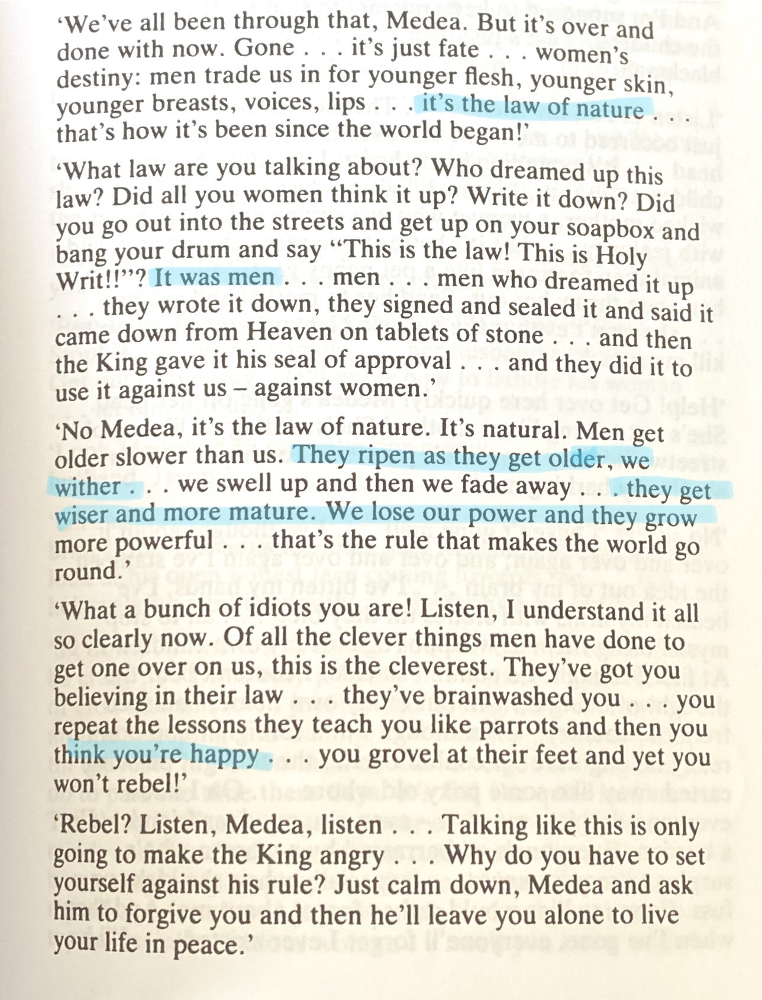
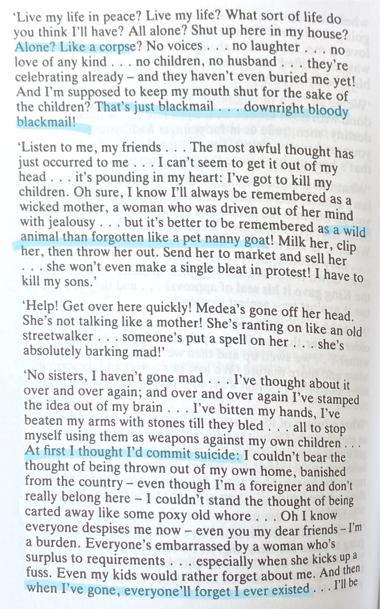
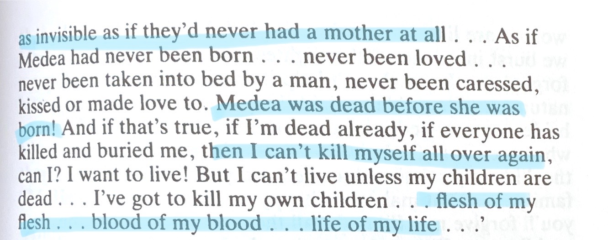

This video is of me going into some detail about who Franca Rame is, and what she did.

Medea is Rame’s retelling of Euripedes’ Medea. There are multiple voices within the monologue, yet it is all performed by one person, switching between a chorus and Medea herself. In Rame’s version, Medea comes to see herself as a victim of oppression. She becomes understandable, rather than an otherworldly and strange creature, Rame’s work turns Medea into a women rooted in the earth, in reality, as translator Gillain Hanna puts it. Hanna, an actress and translator, said that “each performer (of Medea) should use any regional accent with which she feels most comfortable and adapt the text using regional colloquialism as necessary”, making Medea modern and familiar, in a way.
  